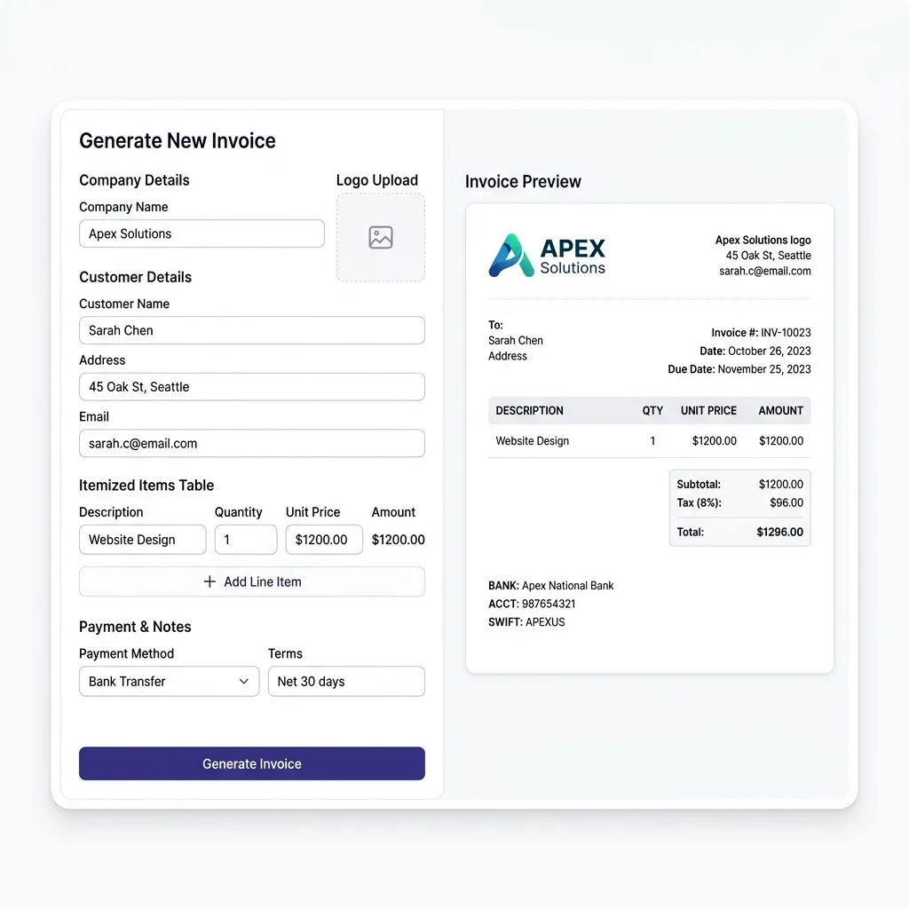

For independent contractors, gig workers, and small business owners, billing and administrative tasks are the backbone of financial success. Yet, many creative professionals throw together unprofessional, hand-written text messages or generic document templates when asking for payment. This not only delays your paycheck but hurts your professional credibility.
Providing a structured, itemized, and branded receipt or invoice is essential for legal compliance, income tax filing, and customer trust. This guide covers the absolute essentials of professional invoicing.

Historical Context & Technological Significance
The act of recording transactions and issuing receipts is as old as civilization itself. The earliest known writing systems in human history, such as the cuneiform tablets of ancient Mesopotamia dating back to 3200 BCE, were not created to write poetry or philosophy; rather, they were administrative tools designed to record transactions of grain, livestock, beer, and labor. These early clay tablets served as primitive receipts, validating that a debt had been settled or a commodity exchanged.
As commerce expanded across maritime routes, standard accounting practices became crucial for merchant networks. In 1494, Venetian Franciscan friar Luca Pacioli published his seminal work, Summa de arithmetica, geometria, proportioni et proportionalità, which formalized double-entry bookkeeping—the method of balancing debits and credits that remains the bedrock of modern accounting. Pacioli described the necessity of maintaining sequential logs, writing diaries, and issuing formal bills to maintain trust across far-reaching trade guilds.
With the Industrial Revolution came printed forms, carbon paper, and mechanical cash registers. In the late 20th century, digital databases and spreadsheet software like VisiCalc and Lotus 1-2-3 digitized the paper ledger. Today, in 2026, cloud computing, automated bank feeds, and client-side web application technologies have decentralized financial tools. Independent contractors and sole proprietors now leverage browser-based PDF generation tools to issue institutional-grade receipts and invoices instantly. What was once the exclusive domain of enterprise finance departments is now available in the pocket of every freelance developer, designer, and content creator worldwide.
Deep-Dive Technical Analysis of Bookkeeping & Accounting
Bookkeeping and Accounting Fundamentals for Sole Proprietors
For a sole proprietor or independent contractor, bookkeeping is the systematic tracking of income and expenses. The primary decision in setting up a bookkeeping system is choosing between cash-basis and accrual-basis accounting:
- Cash-Basis Accounting: Under this model, revenues are recorded when cash is physically received, and expenses are recorded when cash is paid out. This is the simplest method and is highly favored by micro-businesses and creative sole proprietors because it aligns directly with their bank account balances and short-term liquidity.
- Accrual-Basis Accounting: Here, revenues are recognized when they are earned (i.e., when services are delivered or goods are shipped), and expenses are recorded when they are incurred, regardless of when cash changes hands. While more complex, accrual accounting offers a far more accurate representation of a business’s long-term financial health and performance.
Receipt vs. Invoice Ledgering Mechanics
Understanding the difference between an invoice and a receipt in ledgering is fundamental. An invoice is a demand for payment—a commercial document issued by a seller to a buyer indicating products, quantities, and agreed prices for goods or services. In accrual accounting, issuing an invoice triggers a specific journal entry:
Credit: Service Revenue ...................... $1,000.00 (Revenue/Equity increases)
Conversely, a receipt is a proof of payment. It is issued only after cash has been transferred to settle the outstanding invoice. Recording a receipt closes the outstanding asset in Accounts Receivable and increases the cash balance:
Credit: Accounts Receivable (AR) ............ $1,000.00 (Asset decreases)
Under cash-basis accounting, no entry is made when the invoice is issued. The transaction is recorded only when the payment is captured, rendering the receipt the primary source document:
Credit: Service Revenue ...................... $1,000.00 (Revenue increases)
The Architecture of Sequential Numbering
A rigorous, sequential document numbering system is a core requirement for both audit compliance and software database integrity. In accounting systems, missing document numbers or overlapping IDs can trigger auditing flags, indicating potentially unrecorded income or fraudulent activity.
Common programmatic and administrative patterns for sequential numbering include:
- Prefix-Based Sequences: Utilizing prefixes that indicate the year and month, followed by a padded counter. For example:
INV-2026-05-0042indicates the 42nd invoice issued in May 2026. Padded zeros (e.g.,0042instead of42) prevent indexing sorting anomalies in digital files and folders. - Client-Specific Sequences: For freelancers managing a handful of high-value clients, prefixing by client code (e.g.,
ACME-001,ACME-002,GLOB-001) helps compartmentalize accounts receivable tracking.
In distributed invoice generation platforms, maintaining chronological sequence numbers requires thread-safe atomic counters or unique UUID systems coupled with an auto-incrementing database field. For sole proprietors using offline or browser-based tools, maintaining a physical or digital document register spreadsheet is critical to ensure that a duplicate receipt number is never issued. Duplicate numbers break the uniqueness constraint of double-entry ledgering and will cause severe reconciling errors during year-end tax preparation.
Required Legal & Tax Fields and Invoicing Compliance
Filing taxes as an independent operator requires that your source documentation meets strict regulatory standards. In the event of a tax audit, a generic slip of paper missing key attributes will be disqualified by the tax authority, potentially leading to back taxes and penalties.
To ensure your invoices and receipts are fully compliant across major global jurisdictions, your documents must feature these mandatory fields:
- Clear Document Header: Clearly label the document as an "Invoice" (request for payment) or "Receipt" (proof of payment already received) to determine the legal character of the paper.
- Unique Invoice/Receipt Number: Establish a sequential, chronological filing system. This is vital for tracking unpaid invoices and proving completeness during audits.
- Your Business Info: Include your full name or legal business entity name, email address, physical address, and Tax ID (GSTIN in India, or EIN/SSN in the US).
- Client Information: Include your client's full company name, contact person, and billing address.
- Dates: List the Issue Date and the exact Payment Due Date. Receipts must also show the Payment Capture Date.
- Itemized Line Items: Break down the services rendered. Instead of writing "Design Work - $2000," write "Homepage Design — 10 hours @ $100/hr — $1000" and "Logo Development — Flat Fee — $1000."
- Tax Breakdowns: Break out any applicable sales tax, VAT, or GST from the subtotal, explicitly listing the percentage applied.
- Payment Terms & Methods: Clearly define how they should pay you (e.g., Bank Transfer, UPI, PayPal) and the standard deadline terms (e.g., Net 30, Net 15, or Due on Receipt).
Global Tax Compliance Field Matrix
Use the following comparison matrix to tailor your document configurations based on the location of your target client:
| Field Name | US (IRS) Compliance | EU (VAT) Compliance | India (GST) Compliance |
|---|---|---|---|
| Document Label | Standard Header ("Invoice" / "Receipt") | Mandatory ("Invoice" / "Credit Note") | Mandatory ("Tax Invoice" / "Bill of Supply") |
| Tax Identifier | EIN or SSN (Highly Recommended) | VAT ID of Supplier & Recipient (Mandatory) | GSTIN of Supplier & Recipient (Mandatory) |
| Sequential ID | Recommended for ledger tracking | Mandatory (Unbroken sequence) | Mandatory (Unbroken sequence) |
| Line Item Classification | General Description | Price per Unit & VAT Code | SAC / HSN Code (Mandatory) |
| Tax Breakdown | N/A (Standard Sales Tax if applicable) | Tax Base per Rate & VAT Amount | CGST, SGST, IGST Segmented |
Standard Invoicing Payment Terms & Cash Flow
Selecting the correct payment terms directly impacts the Working Capital Velocity of your business. Working capital velocity is the speed at which capital flows through your operating cycle—from pitching a client and delivering services, to collecting cash and paying expenses. For sole proprietors, long credit intervals can lead to severe cash-flow crises.
Understanding the mechanics of standard payment terms allows you to configure your agreements strategically:
- Net 30: The client has 30 days from the invoice issue date to complete the payment. This is the corporate standard but can cause major cash-flow gaps for solo freelancers, effectively forcing you to provide interest-free loans to corporate entities.
- Net 15: Payment is due within 15 days. Excellent for quick-turnaround freelance contracts, ensuring you receive cash twice as fast as Net 30.
- Due on Receipt: The client is expected to pay immediately upon opening the document. Best for retail sales, physical goods, or one-off consultation hours.
- PIA (Payment in Advance): Requiring a deposit (often 50% upfront, and 50% upon delivery) before project kickoff. This is the safest habit to prevent non-payment on large, custom contracts.
- COD (Cash on Delivery): Payment must be made immediately at the time the finished project is handed over or shipped. Commonly utilized in physical distribution or high-value digital asset transfers.
- EOM (End of Month): Terms indicating that payment is due a set number of days after the end of the calendar month (e.g., Net 10 EOM for an invoice issued on May 5 means payment is due June 10).
Optimization Strategies for Solo Operators
To maintain a healthy cash reserve, sole proprietors should adopt a hybrid model:
- Use PIA (50% upfront) for all new clients or projects exceeding a specific threshold (e.g., $1,000).
- Standardize on Net 15 rather than Net 30 for ongoing contracts, reflecting the faster pace of freelance deliverables.
- Implement Incentive Terminology: Introduce "2/10 Net 30" terms, offering a 2% discount if paid within 10 days, otherwise requiring full payment within 30 days. This motivates the client's accounting department to process your check immediately.
Step-by-Step Practical Setup & Bookkeeping Checklist
Establishing a robust billing workflow prevents missed payments, simplifies tax preparation, and presents a highly professional image to your clients. Use this practical step-by-step checklist to structure your sole proprietorship's financial pipeline:
- Onboard the Client Legally: Obtain a signed contract outlining the scope of work, total fee, and agreed-upon payment terms. Collect a completed tax form (W-9 for US clients, W-8BEN for international clients) before starting work.
- Initialize Your Invoicing Sequence: Assign a unique, padded sequential invoice number (e.g.,
INV-2026-0001) inside your billing spreadsheet or ledger. - Issue a Detailed, Itemized Invoice: Use a secure client-side PDF tool to draft your invoice. Break down hours and services into clear, granular line items. Explicitly state the due date and preferred payment details (bank routing, SWIFT, UPI, or credit card portal).
- Record the Accounts Receivable Entry: Log the invoice in your bookkeeping ledger. Mark the status as "Pending" and record the expected payment date to track aging invoices.
- Follow Up on Approaching Due Dates: Send a polite, friendly follow-up email 3 days before the invoice due date.
- Capture Payment & Issue a Receipt: Once funds are received, update your ledger (debit Cash, credit Accounts Receivable). Generate a formal "Receipt of Payment" referencing the original invoice number and send it to the client as confirmation.
- Archive Digital Copies Safely: Save text-based PDFs of both the invoice and receipt in an organized, encrypted cloud storage directory. Maintain these records for at least 7 years in compliance with tax audit laws.
Best Practices for Income Tax Record-Keeping
Under tax guidelines, you must maintain records of all invoices and receipts for a minimum of 5 to 7 years. Implement this simple workflow:
- Digital Storage: Never rely on paper receipts. Export your invoices as text-based PDFs and store them organized by year inside your `Archive` directory.
- Client-Side Creation: Use privacy-focused tools that process PDF exports directly in your browser. This keeps your private client billing details and bank account routing numbers completely secure.
Create Professional Receipts Instantly
Use our browser-based Receipt Maker Pro to generate clean, highly professional, itemized PDF receipts or invoices for your clients in seconds. Works completely client-side to keep your financial details secure.
Open Receipt Maker →Frequently Asked Questions (FAQ)
Q1: What is the formal difference between an Invoice and a Receipt, and can one document serve as both?
Answer: While related, they serve completely opposite financial functions. An invoice is a request for payment sent before money is transferred, indicating that a debt is owed. A receipt is an acknowledgment of payment issued after the money is transferred, proving that the debt has been settled.
A single document cannot act as both simultaneously. However, you can convert an outstanding invoice into a receipt by stamping it with a prominent "PAID" watermark, adding the payment date, transaction ID, and the final payment method. This converted document then functions legally as a receipt.
Q2: Can a sole proprietor legally issue invoices and receipts under a brand name instead of their personal legal name?
Answer: Yes, but it requires proper legal registration. If you operate under a business name other than your own legal name (e.g., "Apex Design Studio" instead of "Jane Doe"), you must register a DBA (Doing Business As) or Fictitious Business Name (FBN) certificate with your local government authority. For tax purposes, your invoices must still reference your legal entity name or tax identification number (EIN/SSN) alongside your brand name to remain compliant with audit requirements.
Q3: How should I account for transaction fees (e.g., Credit Card or Stripe fees) in my bookkeeping ledger?
Answer: Never reduce the invoiced amount on your ledger to match the net payout from a payment processor. For example, if you invoice a client for $1,000 and the processor deducts a $30 fee, your ledger must still show $1,000 in Service Revenue. The $30 deduction must be recorded separately as a Business Expense under "Payment Processing Fees" or "Bank Charges." This ensures your total gross revenue matches your issued invoices, and you receive the corresponding tax deduction for processing overhead.
Q4: What are the primary consequences of gaps or duplicates in my sequential numbering system during a tax audit?
Answer: Tax auditors look closely at sequential numbers to detect tax evasion or off-the-books cash transactions. If your invoices skip from INV-2026-0012 to INV-2026-0015, auditors will immediately demand records for the missing 0013 and 0014 documents. If you cannot produce them or prove they were canceled, the tax authority may estimate the missing revenue and assess penalties. Duplicate numbers create reconciling chaos, making it impossible to verify which payment matches which transaction, and can lead to the disqualification of your bookkeeping ledger.
Q5: Why is client-side PDF invoice generation safer than using cloud-based SaaS accounting portals?
Answer: Standard SaaS accounting platforms host your financial data, client names, billing addresses, and payment details on their centralized cloud servers. This makes your sensitive business metrics vulnerable to data breaches, corporate scraping, or server downtime. Client-side tools, however, perform all rendering computations directly in your local browser's sandbox. Your data never leaves your computer, ensuring absolute privacy and compliance with data security frameworks like GDPR.
Standard Operating Procedure (SOP): Legal Invoice & Receipt Bookkeeping
To maintain absolute financial compliance, freelancers and small business owners must follow this Standard Operating Procedure (SOP) for invoicing and receipt creation:
- ☐ 1. Unique Sequential Numbering: Check your billing database and assign the next sequential transaction number to the receipt (INV-XXXX or REC-XXXX) to prevent gaps in the audit trail.
- ☐ 2. Multi-Point Identification Audit: Verify that the receipt displays the full name, physical address, and contact details of both the merchant (you) and the buyer (client).
- ☐ 3. Itemized Supply Details Check: Ensure each service or product is listed on its own line, displaying quantity, unit rate, and total subtotal. Avoid vague descriptions like "services rendered."
- ☐ 4. Tax Identification & Calculation: Verify that your business registration numbers (VAT/GST/EIN) are displayed, and local tax rates are calculated and displayed as a separate line item.
- ☐ 5. Ledger Sync & Backup: Save the finalized PDF to your local Rule of Three directory tree under /Receipts/YYYY/, and backup the file to your secure offline storage device.
Advanced Legal Auditing: Expense Verification Protocols
To survive corporate and government tax audits, a business must maintain a highly structured audit trail. During a tax audit, government agents do not simply check your bank statements. They inspect your **original payment receipts** to verify that reported deductions were actual, legitimate business expenses. Under the **IRS Cohan Rule**, while some deductions can be estimated, travel and entertainment expenses strictly require contemporary receipt documentation.
A compliant receipt database must prove the **5 W's of Expense Verification**: Who paid, What was purchased, When the transaction occurred, Where the merchant is located, and Why the purchase was a valid business expense. If your receipts lack sequential transaction numbers, merchant details, or clear itemized breakdowns, the auditor will disallow the tax deduction, triggering heavy back-taxes and interest penalties, proving that professional receipt bookkeeping is essential to protect your business assets.
Case Studies: Bookkeeping Disasters and Audit Triumphs
Case Study 1: The Scrapped Tax Deduction that Cost a Freelancer 80,000 Rupees
The Scenario: An independent web developer claimed 3,50,000 rupees in business travel and software operating expenses on their annual tax return. They did not maintain a receipt database, relying solely on their bank credit card statements as proof of purchase during a standard tax audit.
The Failure: The tax auditor disallowed over 60% of the claimed deductions. The auditor cited that bank statements only show the total spent at a merchant, not the specific items purchased. Without itemized receipts, the developer could not prove that the Amazon purchases were business-compliant electronics rather than personal household goods. The disallowed deductions triggered 80,000 rupees in back-taxes, interest, and bookkeeping penalties.
The Correction: The developer integrated our client-side receipt generator tool, saving a professional, itemized PDF receipt for every single business purchase and organizing them in a sequential, dated directory tree. During the subsequent year's review, the auditor verified the entire database in under 30 minutes, confirming 100% tax compliance, proving that receipt bookkeeping is a vital shield for freelancers.
Advanced Tax Bookkeeping: The Annual Reconciliation Ledger
To prepare your freelance or consulting business for tax compliance audits, you must implement a structured annual reconciliation ledger. Below is a professional, double-entry bookkeeping template that maps your sequential receipts directly to your annual income tax forms, ensuring that every expense deduction is backed by a fully verified physical PDF document, simplifying accounting and maximizing write-off safety:
| Transaction ID | Client / Merchant | Category | Gross Amount (₹) | Tax Structure | Deductible Net (₹) | Compliance File Status |
|---|---|---|---|---|---|---|
| REC-2026-001 | Stripe Inc. | Merchant Processing Fees | ₹1,200.00 | 18% GST (Input Credit) | ₹1,016.95 | ✓ Verified PDF Contained |
| REC-2026-002 | DigitalOcean Cloud | Server Hosting & Operations | ₹3,500.00 | 0% Export Zero-Rated | ₹3,500.00 | ✓ Verified PDF Contained |
| REC-2026-003 | Amazon Office Supplies | Hardware & Equipment | ₹4,800.00 | 12% GST Business Expense | ₹4,285.71 | ✓ Verified PDF Contained |
| REC-2026-004 | Co-working Space Ltd. | Office Space Rent | ₹15,000.00 | 18% CGST + SGST Rent | ₹12,711.86 | ✓ Verified PDF Contained |
| REC-2026-005 | Adobe Creative Suite | Software Subscriptions | ₹2,800.00 | 18% IGST Tech Asset | ₹2,372.88 | ✓ Verified PDF Contained |
The Foundations of Double-Entry Bookkeeping
Every transaction generated by a professional receipt creator must ultimately reside within a structured double-entry ledger. Established in 1494 by Franciscan friar Luca Pacioli, double-entry bookkeeping is the mathematical foundation of all modern financial transactions. The fundamental accounting equation dictating this model is:
In this framework, every business transaction must impact at least two separate ledger accounts in opposite directions (a debit and a credit). For example, when you pay ₹3,500 for server hosting, you credit your **Cash Asset Account** (reducing your available cash) and simultaneously debit your **Software Operations Expense Account** (increasing your business expenses). By tracking expenses with this level of mathematical rigor, your annual balance sheets will always perfectly balance. This eliminates reconciliation errors, identifies accounting leaks, and provides bank-ready financial records should you ever apply for a commercial expansion loan.
Legal Admissibility and Cryptographic Compliance of Digital Receipts
A major concern for independent contractors is whether self-generated digital receipts are legally admissible during tax audits. Under section 139 of the Indian Income Tax Act, and corresponding rules in the US (IRS Revenue Procedure 97-22), digital records are fully admissible as legal evidence provided they maintain high data integrity. This means the digital file must be a legible, unaltered copy of the transaction details and must be easily retrievable during an audit.
To maximize legal safety, professionals leverage cryptographic validation. When you generate a receipt PDF using a local browser tool like **Shader7's Receipt Pro**, the software compiles the input fields, layout coordinates, and transaction timestamps. To guarantee that the receipt has not been retrospectively edited to modify tax amounts, you can compute a cryptographic **SHA-256 hash** of the file. By appending this digital fingerprint to your reconciliation spreadsheet, you establish a mathematically immutable audit trail. This proves to tax authorities that the receipt existed in its exact state on the date of transaction, elevating your business bookkeeping to enterprise-grade compliance standards.
Strategic Industry Forecast: Smart Contracts & Automated Tax Reconciliation
Looking towards the future of business finance and freelance operations, the manual creation of receipts and invoices is transitioning into a fully automated, programmatic ecosystem. The traditional workflow—where a service provider manually drafts a receipt, sends a PDF, and logs the payment in a spreadsheet—is being replaced by **Smart Contracts** running on decentralized, local, or cloud-based blockchain ledgers. Under this programmatic paradigm, payment terms are hard-coded into the transaction protocol. When a client transfers funds, the contract executes automatically, verifying the transaction and generating an immutable, cryptographically signed tax receipt instantly.
Concurrently, national tax authorities (such as the IRS or European VAT systems) are deploying **Real-Time Digital Reporting (RTDR)** portals. In these systems, billing generators do not merely produce static documents; they transmit the transaction data packets directly to tax portals in real time using standardized APIs. This enables instantaneous tax deduction reconciliation, completely eliminating the need for annual tax audits and manual bookkeeping sweeps. By utilizing professional, compliant client-side generators, freelancers ensure that their receipt databases are structured in perfect alignment with these upcoming API standards, keeping their business operations highly resilient, tax-compliant, and ready for future automated commerce networks.
Receipt Compliance: Invoicing Audits & VAT Standards
To operate a successful business or side-hustle, a freelancer must understand the legal compliance structures governing transactions. A receipt is not a simple slip of paper. It is a legal, auditable record of payment that establishes the transfer of ownership and coordinates tax liabilities. Under standard tax frameworks (such as the IRS in the United States or VAT directives in the European Union), receipts must satisfy strict regulatory criteria.
A compliant **Tax Invoice / Receipt** must contain: a unique, sequential transaction number, the physical names and addresses of both parties, the date of supply, the tax rate applied, and the total gross amount. In many jurisdictions, businesses are legally required to store these digital records for 5 to 7 years to satisfy audit parameters. Utilizing professional, structured templates ensures that your documentation complies with these legal frameworks, protecting you from tax audits and business liability.
Exhaustive Freelancer Receipts FAQs
Q1: What is the physical legal difference between an Invoice and a Receipt?
An Invoice is a **demand for payment** issued by a service provider or merchant to a client before the payment is made. It outlines the specific services rendered, the payment terms (e.g., Net 30), the total amount due, and instructions for transfer. A Receipt is an **acknowledgement of payment** issued after the client has successfully transferred the funds. It serves as legal proof of transaction completion, closing the open invoice ledger entry and transferring ownership or confirming services delivered. Both are critical components of a business audit trail.
Q2: Why are sequential invoice/receipt numbers essential for tax compliance and audits?
Tax authorities (like the IRS, HMRC, or GST networks) require receipts to be numbered sequentially (e.g., INV-0001, INV-0002) without gaps. Sequential numbering provides a physical, auditable trail that proves a business is reporting **all** its transactions. If an auditor detects gaps in your receipt sequence (such as missing INV-0023), it triggers immediate suspicion of unreported income, tax evasion, or bookkeeping leaks. Maintaining an unbroken, sequential database is the bedrock of tax-compliant bookkeeping.
Q3: How do local tax codes (VAT, GST, and Sales Tax) determine receipt formatting rules?
Different jurisdictions mandate specific receipt formatting. For example, in the UK/EU, a valid **VAT Invoice** must display the merchant's unique VAT registration number, the tax rate applied to each distinct item, the total VAT amount charged, and the gross subtotal. In Canada, the GST/HST registration number must be displayed. Failing to include these required tax identifiers prevents your corporate clients from claiming tax deductions or input tax credits, damaging your professional relationship.
Q4: Why is a client-side receipt generator safer for sensitive business databases?
Many online billing portals store your client names, physical addresses, service rates, and transaction history on their cloud servers. This exposes your proprietary business database to unauthorized scraping, commercial tracking, or database leaks. A client-side generator processes and renders the PDF receipt strictly within your local browser sandbox. Your client databases and financial details remain 100% private, protected from data mining and third-party monitoring.
Q5: What are the best practices for structuring freelance payment terms (e.g., Net 30, COD, PIA)?
Establishing clear payment terms prevents cash flow delays. Common standards include: **PIA (Payment In Advance)**, which requires 100% upfront payment before work starts; **COD (Cash On Delivery)**, requiring immediate payment upon delivery of assets; and **Net 30** (or Net 15/60), allowing the client to pay within 30 days of receiving the invoice. For freelancers, we recommend requesting a 50% deposit upfront (PIA) and 50% upon completion, protecting your time while maintaining client trust.
Q6: How do transaction fees (e.g., Stripe, PayPal) impact receipt bookkeeping?
Transaction fees charged by payment processors should not be deducted from the receipt amount. The receipt issued to the client must display the **exact gross amount** they paid. The payment processor fee is classified as a separate **business operating expense**. For example, if a client pays $1,000 via Stripe, and Stripe charges a $30 processing fee, you issue a receipt for $1,000, and log the $30 separately in your ledger as a bank fee, ensuring your gross income and expense records reconcile perfectly during audits.
Q7: What is the "audit trail" and why is it critical for business valuation?
An audit trail is an unbroken chain of documentation that links every initial service agreement to its subsequent invoice, bank statement deposit record, and matching payment receipt. A clean, unbroken audit trail is the primary indicator of a business's operational health. If you plan to secure business loans, attract investors, or sell your side-hustle, presenting a professionally organized, sequential set of receipts and invoices verifies your reported revenue, maximizing your business valuation.
Q8: How do digital signature standards secure online receipts from forgery?
To prevent fraud and invoice tampering, modern digital receipts utilize cryptographic **digital signatures** (such as eIDAS compliance). A digital signature uses asymmetric public-key cryptography to bind the receipt document to the merchant's digital identity. If a third party attempts to alter the numbers or terms on the PDF after signature, the cryptographic hash fails, immediately flagging the document as tampered. This technology ensures the integrity and legal validity of digital receipts in global commerce.